✕
누르면 전체 보기 · 두 손가락으로 더 크게
* 시작하기에 앞서…
당화혈색소가 좋다고 안심하시면 안 됩니다.
* 이 글은 당뇨 6년 차,
수치는 잘 잡았는데 발이 저려
밤마다 깨던 저의 경험을 바탕으로
작성하는 이야기입니다.
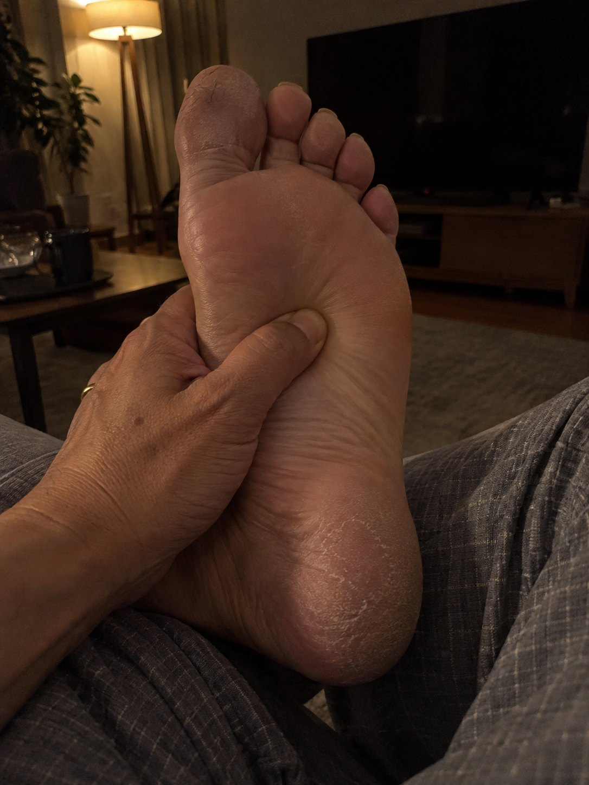
"이 정도면 아주 잘하고 계세요."
작년 11월,
내분비내과 정기검진에서
들은 말입니다.
당화혈색소 5.7.
선생님이 결과지를 보며
웃으셨습니다.
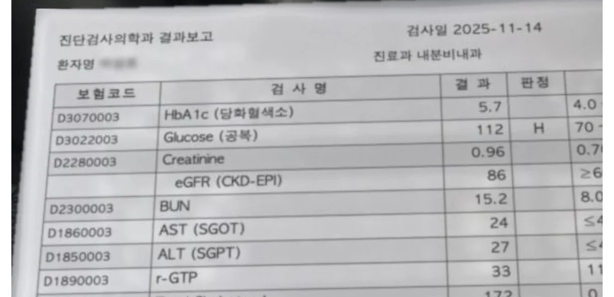
저도 따라 웃었습니다.
6년 동안 지켜 온 수치였으니까요.
그날 밤 새벽 세 시,
발바닥이 저려서 잠이 깼습니다.
모래를 한 움큼 밟고 선 것처럼
발바닥이 서걱거렸습니다.
'아까 잘하고 있다고 했는데…'
잘하고 있는 게 아니었습니다.
저도 진단을 받았을 때는
수치만 잡으면 끝인 줄 알았습니다.
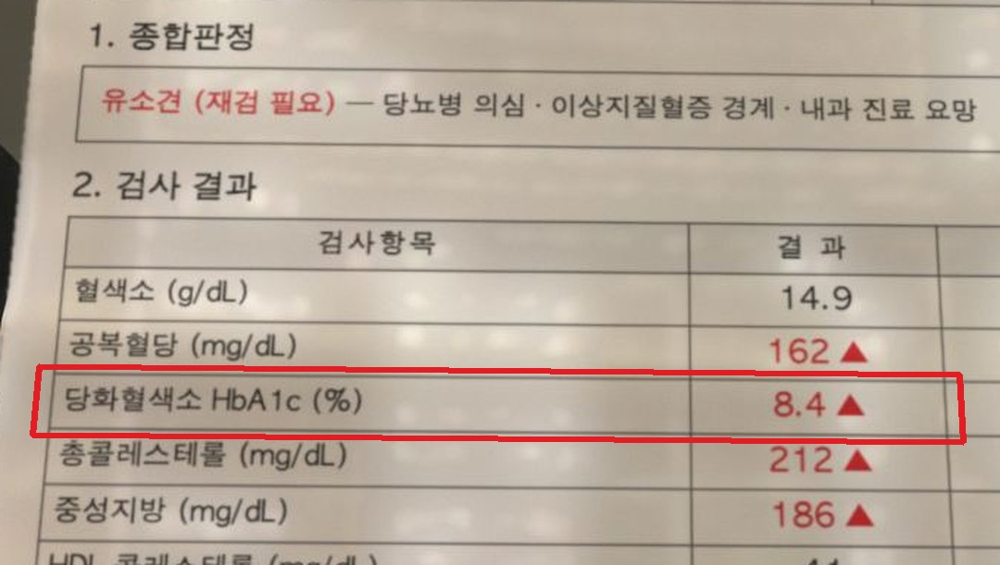
2020년 회사 건강검진.
당화혈색소 8.4.
그날부터 메트포르민을
아침저녁으로 한 알씩 먹었습니다.
흰쌀밥을 현미밥으로 바꾸고,
저녁을 먹으면 아파트 단지를
40분씩 걸었습니다.
2년 만에 5점대로 내려왔고,
그 뒤로 3년 동안
6을 넘긴 적이 한 번도 없습니다.
병원에 갈 때마다
"관리 잘하고 계시네요."
솔직히 좀 뿌듯했습니다.
그러다 작년 봄,
발끝이 저리기 시작했습니다.
처음엔 동네 내과에 갔습니다.
"당은 잘 잡혀 있으니
당뇨 때문은 아닐 거예요.
허리 한번 찍어 보세요."
정형외과에서 허리를 찍었습니다.
디스크는 깨끗했습니다.
대학병원 신경과에서
근전도 검사를 받았습니다.
"신경 검사는 정상입니다."
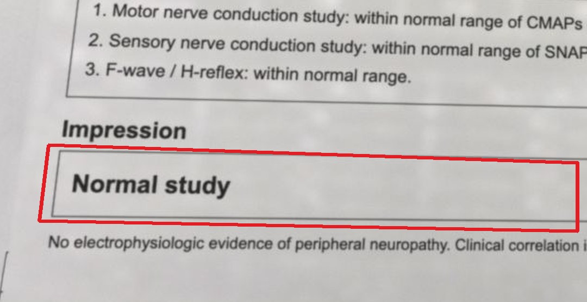
정상이라는데
발은 계속 저렸습니다.
내분비내과에서는
"당은 잘 잡혀 있어요."
신경과에서는
"혈당 관리 잘하세요."
저는 두 진료실 사이에서
1년을 버텼습니다.
리리카를 받았습니다.
먹을 때만 조금 덜하다가
다시 그대로였습니다.
뉴로치온을 석 달 먹었습니다.
그대로였습니다.
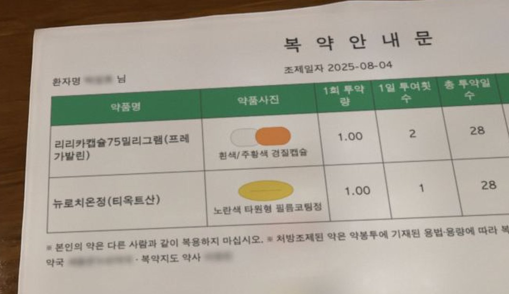
자다가 발이 저려 깨면
거실 소파에 나와 앉아
발바닥을 주무르다 새벽을 보냈습니다.
옆에서 자던 아내가
몇 번이나 따라 나왔습니다.
'이러다 발이 무뎌지면 어쩌지…'
당뇨발 사진을
검색해 본 날도 있습니다.
휴대폰 화면을 끄고
한참을 그냥 앉아 있었습니다.
이대로 발을 잃을 수는 없다.
어떻게든 원인을 찾아야겠다.
만약 이 글을 읽으시는 분도
약 꼬박꼬박 드시고,
식단에 걷기까지 하는데
발이 저려 밤에 깨신다면,
검사는 정상이라는데
저린 건 그대로라면,
관리를 못 하신 게 아닙니다.
이 글에서 해답을 찾으실 수 있을 거라
확신합니다.
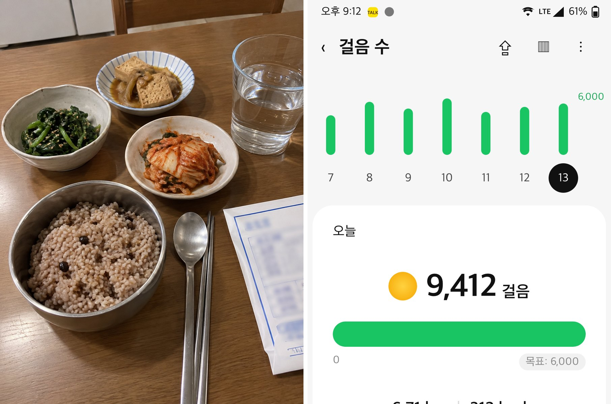
올해 설,
대학 동기 석진이가 한국에 들어왔습니다.
미국 텍사스에서
20년째 내분비내과 의사로 일하는 친구입니다.
저녁을 먹다가
발 얘기를 꺼냈습니다.
석진이가 제 결과지 사진을
한참 들여다보더니 말했습니다.
"당화만 보면 안 돼.
미국에선 연속혈당측정기로
밥 먹고 한 시간을 같이 봐."
무슨 말인지 몰라
멍하니 쳐다봤습니다.
석진이가 식당 냅킨에
그림을 그려 줬습니다.
"당화혈색소는 석 달 평균이야.
평균은 꼭대기를 못 봐."
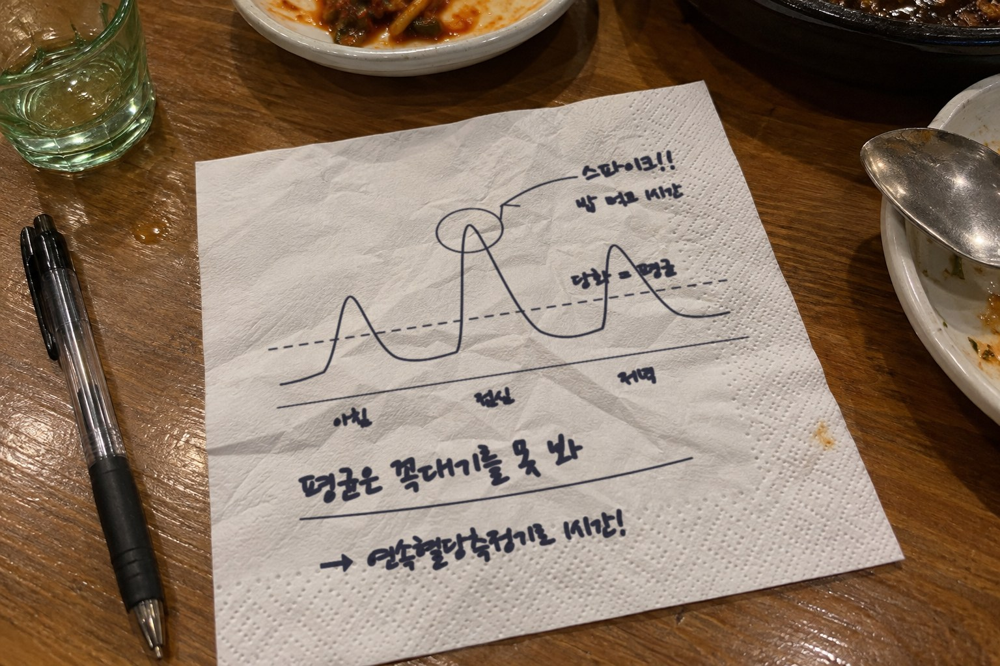
밥을 먹으면 한 시간쯤 뒤
혈당이 확 치솟았다가
천천히 내려옵니다.
이 꼭대기를
혈당 스파이크라고 부릅니다.
내려와 있는 시간이 훨씬 기니까
평균은 예쁘게 나옵니다.
스파이크는 수치에 안 잡힙니다.
실제로 미국당뇨병학회 진료 지침은
연속혈당측정기로
혈당이 목표 범위 안에 머문 시간을
같이 보라고 합니다.
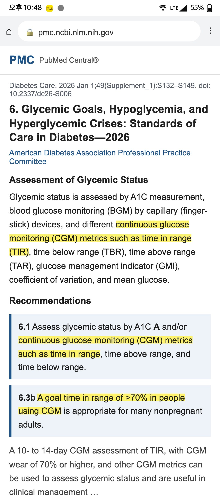
한국 병원에선
석 달에 한 번, 당화만 봅니다.
선생님 잘못이 아닙니다.
진료실에서 볼 수 있는 수치가
당화뿐이라서요.
석진이 말대로
연당기를 제 돈으로 사서
2주 동안 팔에 붙였습니다.
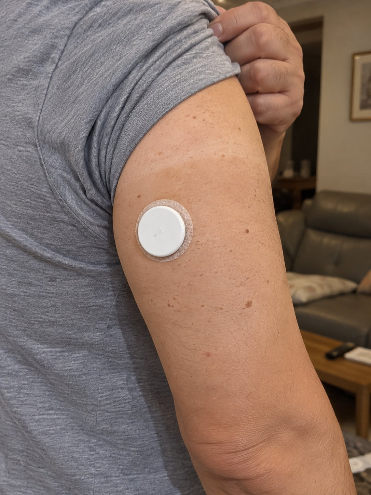
점심을 먹으면
한 시간 뒤로 휴대폰 알람을 맞췄습니다.
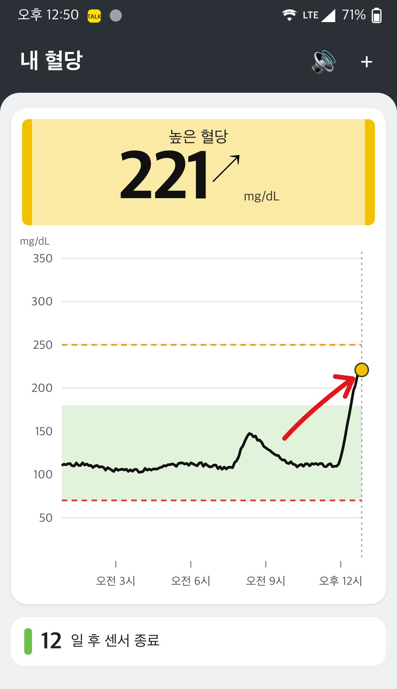
점심 먹고 한 시간, 221.
두 시간 뒤엔 138.
당화 5.8인 사람의 수치였습니다.
병원에서 재던 식후 2시간에는
이미 내려와 있었던 겁니다.
석 달 동안
아무도 안 잰 수치였습니다.
혈당 관리는 두 가지가 있습니다.
세 달간 평균만 내리는 관리,
밥 먹고 한 시간 스파이크를 낮추는 관리.
저는 6년 동안
첫 번째만 하고 있었습니다.
오래 방치한 탓도,
관리를 게을리한 탓도 아니었습니다.
냄비에 설탕을 졸일 때
불을 확 올리면
바닥에 눌어붙죠.
몸 안에서는
밥 먹고 한 시간,
혈당이 치솟는 그때가 센 불입니다.
그 순간마다
당이 가느다란 혈관 벽에 눌어붙습니다.
이게 당독소입니다.
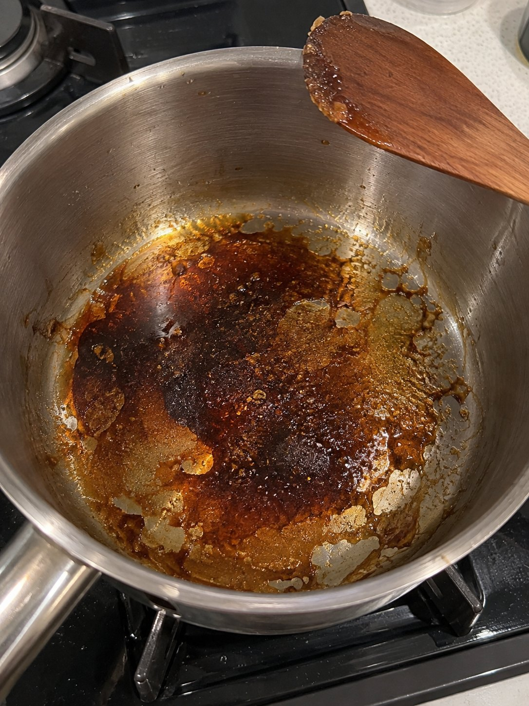
그래서 제일 가는 혈관이 지나가는
발끝, 손끝, 눈, 콩팥부터
신호가 옵니다.
발 저림, 소변 거품, 눈 침침.
다 같은 데서 시작된 겁니다.
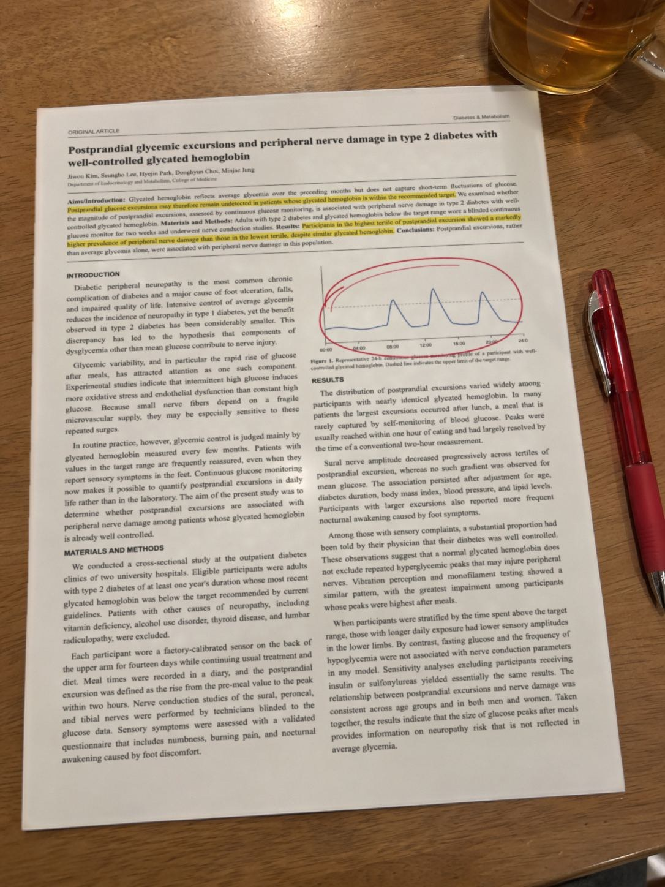
석진이가 보내 준 논문에도
그대로 나와 있었습니다.
2023년 SCI급 국제 학술지 연구에 따르면,
당화혈색소를 6점대 이하로 유지하던
2형 당뇨인 1,248명 중
식후 혈당이 크게 출렁이던 사람은
말초신경 손상이 1.9배 많았습니다.
평균이 같아도
꼭대기가 높으면
신경이 상한다는 얘기였습니다.
더 무서운 건 따로 있었습니다.
신경은 한 번 망가지면
회복이 힘들다고들 하죠.
그래도 아주 조금씩은 돌아옵니다.
1년에 13mm 정도라고 하더라고요.
그런데 밥 먹고 혈당이 확 치솟으면
그렇게 조금 돌아온 게
다시 도루묵이 됩니다.
저는 그걸 모르고 1년을 버텼습니다.
그래서 관리를 해도
발 저림이 그대로였던 겁니다.
리리카는 아픈 걸 눌러 주는 약입니다.
석진이 말로는
통증 신호를 잠깐 낮춰 줄 뿐이랍니다.
뉴로치온은
이미 생긴 손상을 닦아 주는 약입니다.
그런데 스파이크는
매끼 다시 왔습니다.
닦아 놓으면 다음 끼니에 또 생기니
그대로일 수밖에 없었던 거죠.
약은 제 일을 했습니다.
다만 하나만 하고 있었던 겁니다.
당독소를 빼 준다는 영양제도
석 달 먹어 봤습니다.
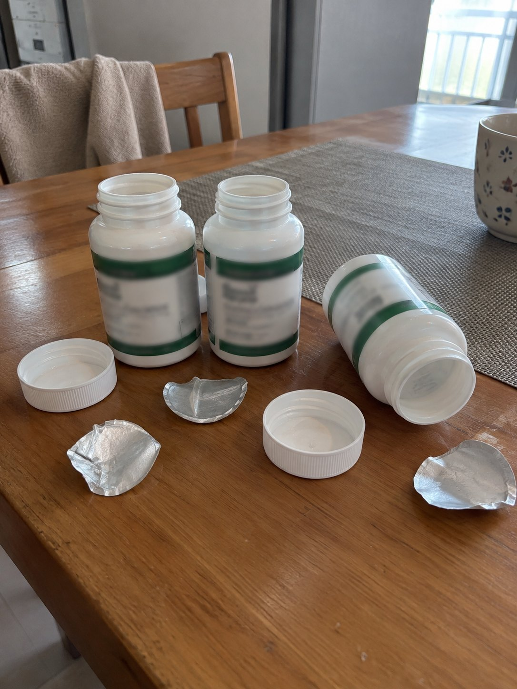
빼는 것도 맞습니다.
그런데 당독소는
매끼 새로 생깁니다.
빼도 다음 끼니에
또 눌어붙습니다.
바나바 차도 끓여 마셔 봤습니다.
식후가 좀 덜 오르는 것 같긴 했는데,
한 잔에 얼마나 들었는지
알 길이 없었습니다.
다들 하나씩만 했습니다.
빼거나, 닦거나, 누르거나.
그 뒤로 석 달,
주말마다 석진이와 영상통화를 하고
보내 준 논문을
번역기로 한 줄씩 읽었습니다.
퇴근하면 식탁에
논문 출력물을 펴 놓고
형광펜을 그었습니다.
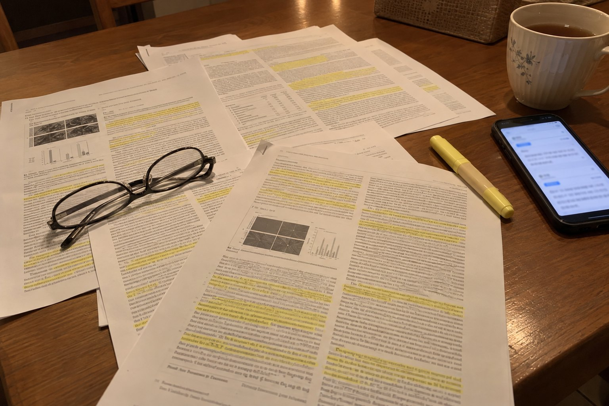
결론은 하나였습니다.
빼고 닦기 전에,
스파이크부터 눌러야 한다.
STEP 1 — 스파이크를 누른다 (바나바잎 추출물)
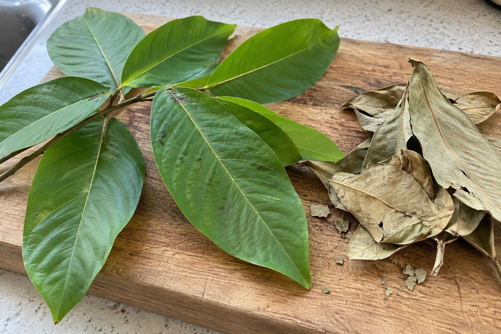
바나바잎에 든 코로솔산은
당이 핏속에 오래 떠 있지 않고
세포 안으로 들어가게 돕습니다.
식약처가 「식후 혈당상승 억제」
기능성을 인정한 원료입니다.
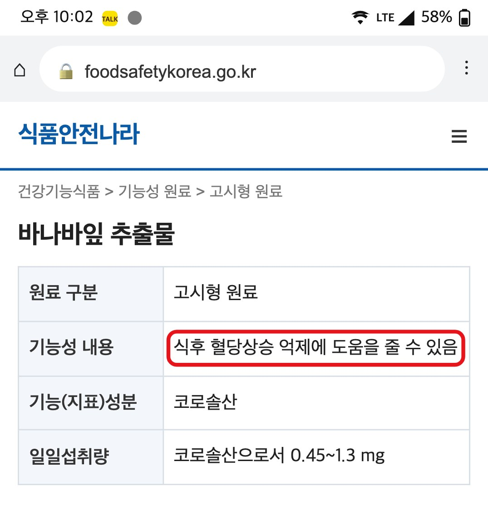
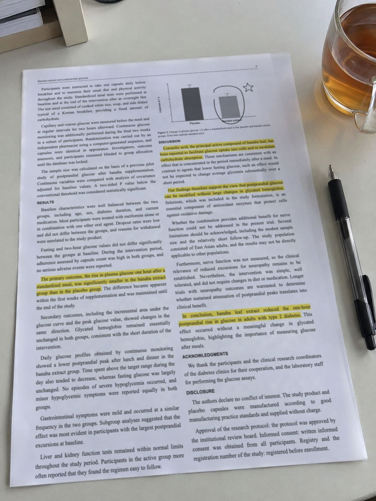
성인 92명이 12주 동안 먹은 연구에서
밥 먹고 1시간 혈당 상승폭이
31% 낮았습니다.
불을 줄이니
바닥에 눌어붙을 일 자체가 줄어드는 거죠.
STEP 2 — 불똥을 덮는다 (셀레늄)
불이 셀 때는 불똥도 튀잖아요.
혈당이 치솟을 때도
세포를 공격하는 유해 산소가 튑니다.
셀레늄은 유해 산소로부터
세포를 지켜 주는 성분입니다.
스파이크를 누르는 것과
그 순간 세포를 덮는 것.
둘을 같이 해야
새로 생기지 않습니다.
석진이가 그날 한 말이
아직도 기억납니다.
"아직 저리다는 건
신경이 살아 있다는 거야.
무뎌지기 전에 잡으면 돼."
다음 날부터 바로 시작했습니다.
아침마다 바나바 차를 진하게 끓이고,
셀레늄은 약국에서 따로 사서
점심 먹기 전에 먹었습니다.
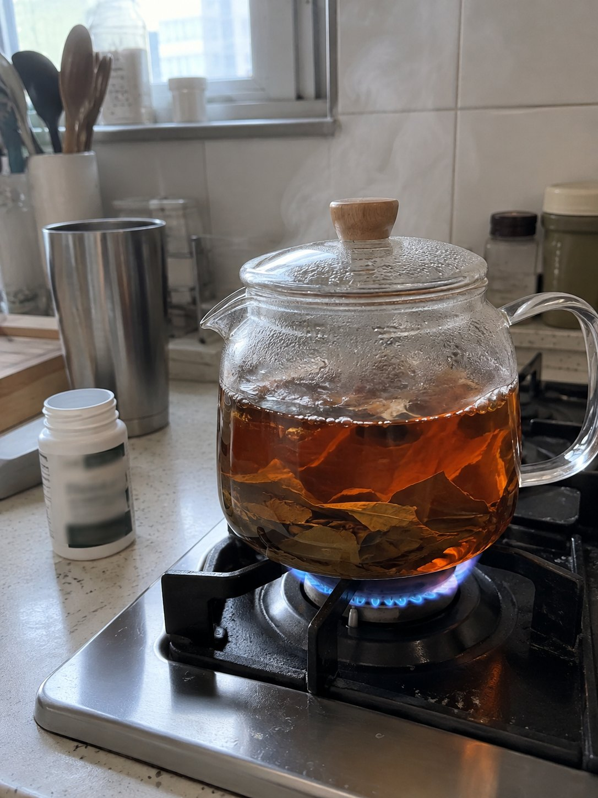
점심을 먹고 한 시간,
연당기를 봤습니다.
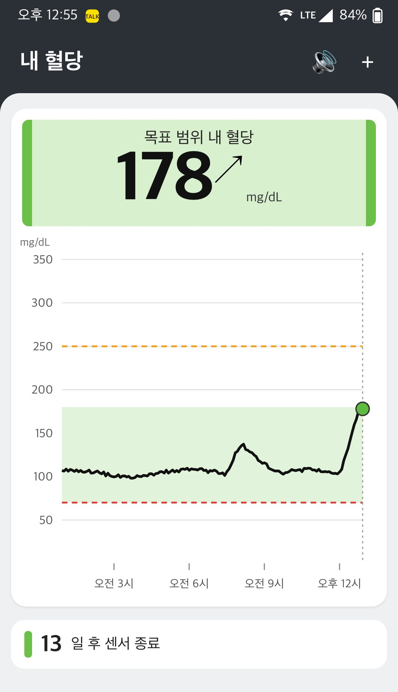
221이던 수치가 178.
잘못 본 줄 알고
화면을 다시 켰습니다.
그런데 들쭉날쭉했습니다.
차를 진하게 끓인 날은 170대,
바빠서 대충 우린 날은
다시 200을 넘었습니다.
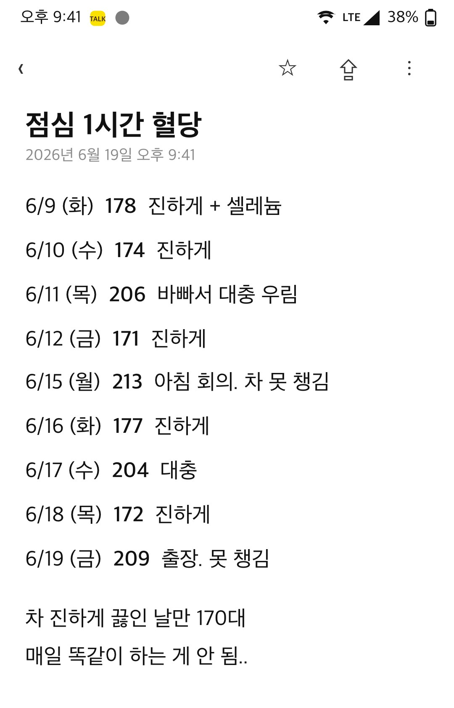
출근하는 날은
차를 챙길 틈이 없었고요.
원리는 맞는데,
매일 똑같이 하는 게 문제였습니다.
바나바와 셀레늄을
매일 같은 양으로, 한 번에
챙길 방법… 없을까?
약국과 인터넷에서
성분표를 하나하나 대조했습니다.
바나바만 든 것,
셀레늄만 든 것,
하루 여섯 알씩 먹으라는 것.
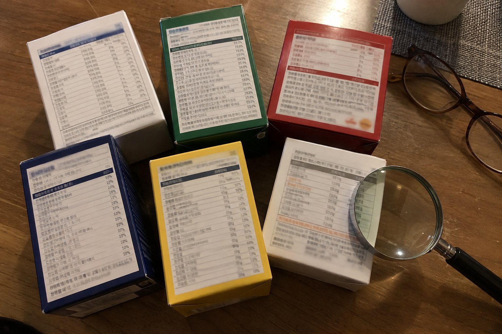
그러다 한 제품의 성분표에서
손이 멈췄습니다.
바나바잎 추출물에
코로솔산 함량이 적혀 있고,
셀레늄이 같이,
하루 한 알.
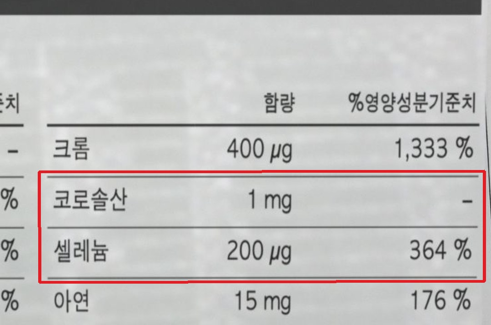
사진을 찍어
석진이에게 보냈습니다.
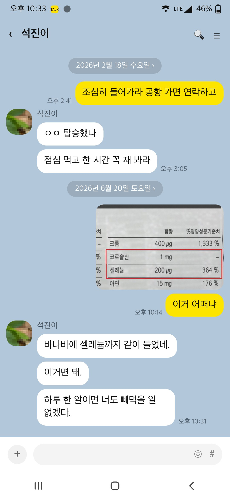
"바나바에 셀레늄까지 같이 들었네.
이거면 돼.
하루 한 알이면 너도 빼먹을 일 없겠다."
새 세포가 자라는 데 꼭 필요한 아연까지
한 알에 같이 들어 있었습니다.
첫 주, 점심 먹고 한 시간.
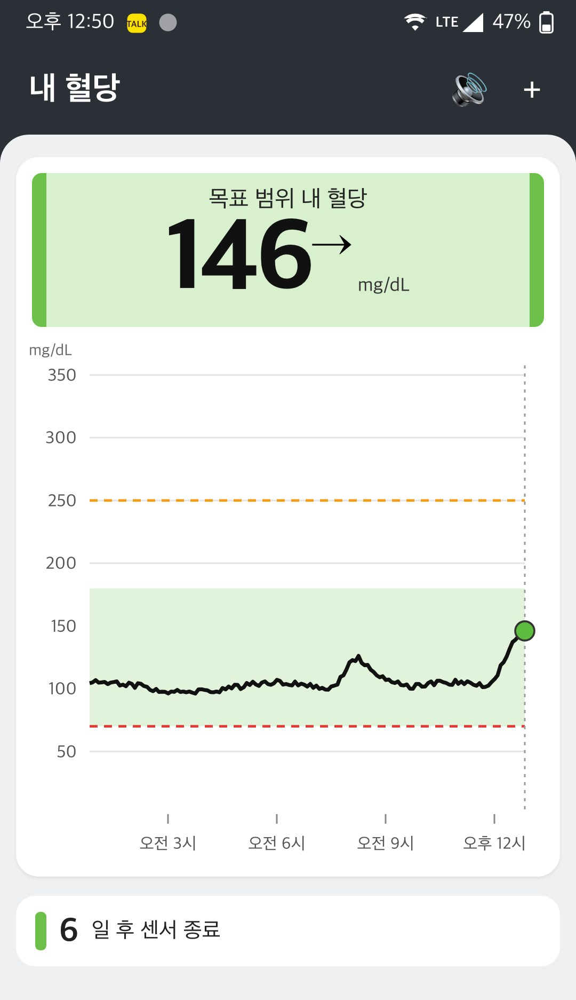
221이던 수치가 146.
34%나 덜 올랐습니다.
들쭉날쭉하지도 않았습니다.
한 알이니까 빼먹을 일이 없었습니다.
2주쯤 지나자
아침 소변 거품이 가라앉기 시작했습니다.
한 달쯤 됐을 때,
아내가 아침을 차리다 말했습니다.
"요즘은 밤에 발 안 주무르네."
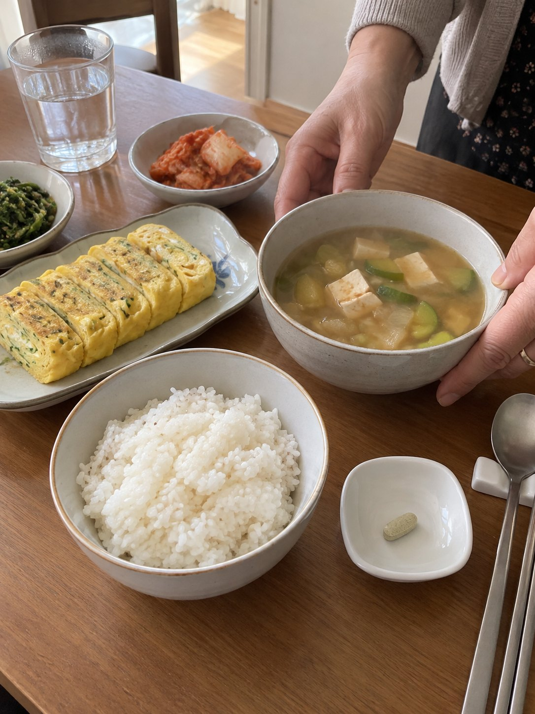
아내 말을 듣고서야 알았습니다.
새벽에 깬 기억이 없었습니다.
석 달 뒤 재검.
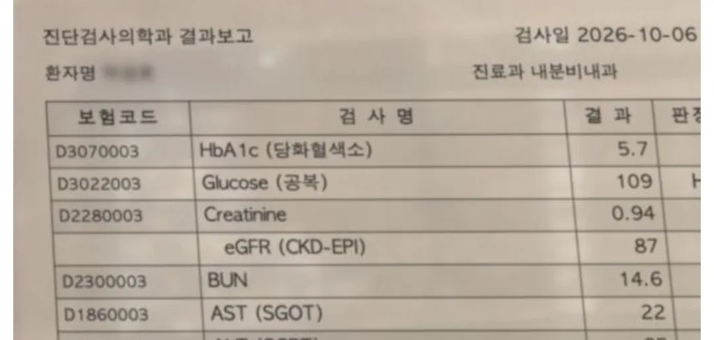
당화혈 5.7.
6년째 그대로인 수치입니다.
수치는 그대로인데,
발은 달라졌습니다.
선생님은 이번에도
"관리 잘하고 계시네요" 하셨습니다.
이번엔 저도
진심으로 웃었습니다.
6년 동안의 관리,
헛수고가 아니었습니다.
스파이크 하나만
아무도 안 잡아 줬을 뿐입니다.
광고성 글이 아니기 때문에
어디 제품인지 적을 수는 없으나,
성분표만 보시면
찾기 어렵지 않으실 겁니다.
마지막으로 한 번만 더 말씀드리겠습니다.
수치는 좋은데 발이 저리시다면,
아래 세 가지를 꼭 확인하세요.
감각이 무뎌지고 나면
그때는 되돌리기 어렵습니다.
아직 저린 게 느껴질 때가
기회입니다.
+ 긴급 추가 공지
제 글이 모 당뇨 카페에 공유되면서
인기글로 올라가는 바람에
쪽지가 하루에 수십 통씩 오고 있습니다.
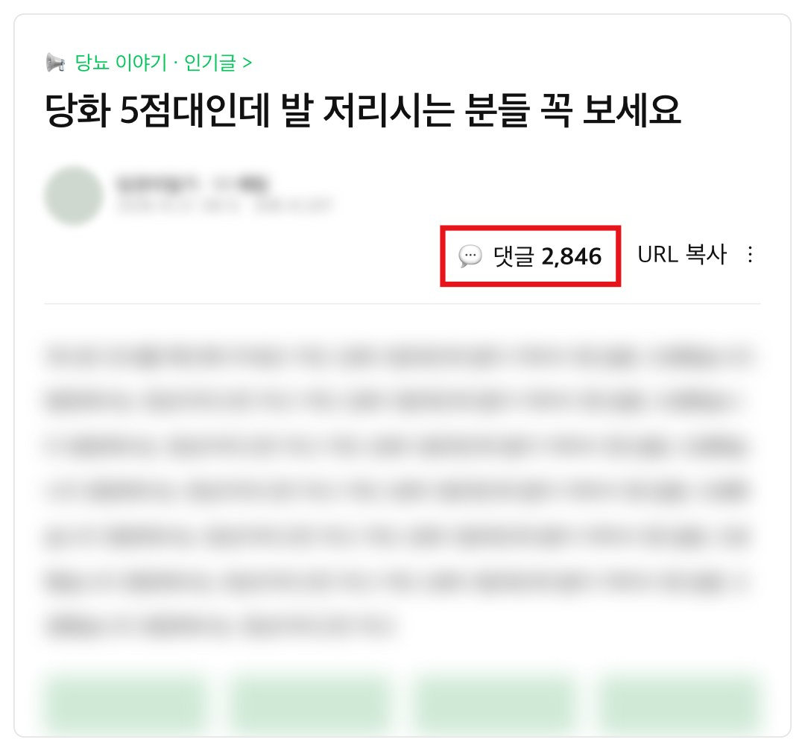
모두 빨리 낫고 싶은 마음에
보내셨을 텐데
일일이 답장 드리지 못해 죄송합니다.
어디서 사냐는 질문이 제일 많아서
오늘 하루만 링크를 남겨 드립니다.
제가 먹는 건
한 통이 석 달 치입니다.
3개월 79,000원 (하루 878원)
6개월 149,000원
9개월 169,000원 (하루 626원) · 배송비 무료
12개월 199,000원 (하루 553원) · 배송비 무료
대부분 9개월을 고르신다고 합니다.
이유는 세 가지입니다.
① 저림이 옅어지는 건 한 달이지만,
다시 끊기지 않게 버티는 데는
반년이 넘게 걸립니다.
② 한 통 값이 빠집니다.
③ 15만 원이 넘어 배송비가 무료이고,
재주문 날짜를 신경 쓰지 않아도 됩니다.
그리고 한 통으로 시작하시면
다 드셔도 14일 안에는
언제든지 환불해 드립니다.
[해당 링크는 내일 삭제할 예정입니다.]
++ 추가 공지
광고 아니냐는 글이 많아서
추가로 남깁니다.
꼭 이 제품을 드셔야 하는 건 아닙니다.
핵심은 제품이 아니라 원리입니다.
밥 먹고 한 시간 스파이크를 누르고,
그 순간 세포를 덮는 것.
바나바와 셀레늄을
하루 한 알로 챙기시면 됩니다.
석진이 말로는
자기 병원 환자들 가운데
같은 방법을 쓴 분들 중에서
2주 만에 소변 거품이 줄었다는 분이
82.4%,
한 달 만에 저림이 옅어졌다는 분이
79.1%였다고 합니다.